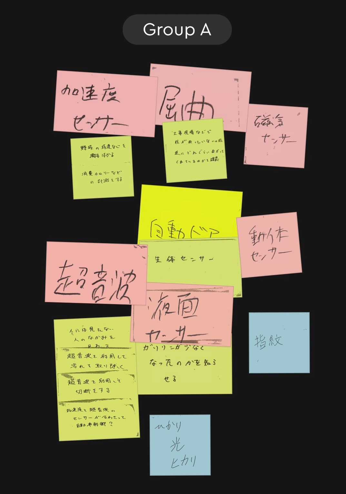
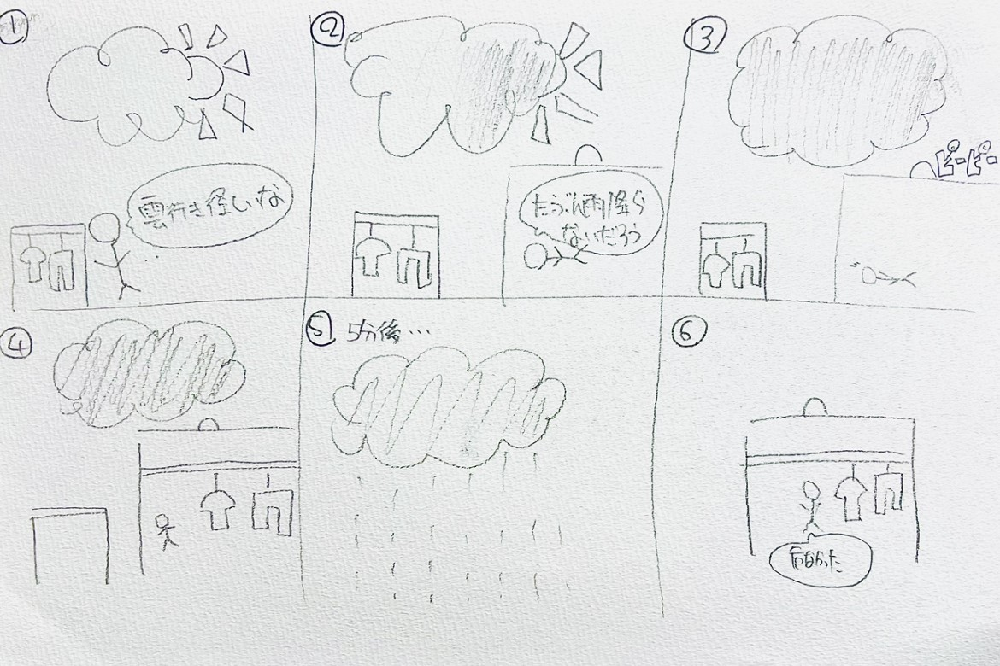

IoTでデータを集めることで何ができるか
グループワークした内容（ポストイット画像）

自分で考えたアイデア（スケッチ）

雲行きが怪しいと思っても、大丈夫だろうと思いながらも
洗濯物を干したままにしていると、雨が降って来るかどうか心配ですが、
せめて5分後に雨が降るとわかることができれば、洗濯物を取り込むことができます。
屋根から空をずっと監視して、AIで気温や気圧の変化などと地点の天気を学習し続ける
カメラを取り付けることでせめて5分後の天気はわかればいいと思いました。